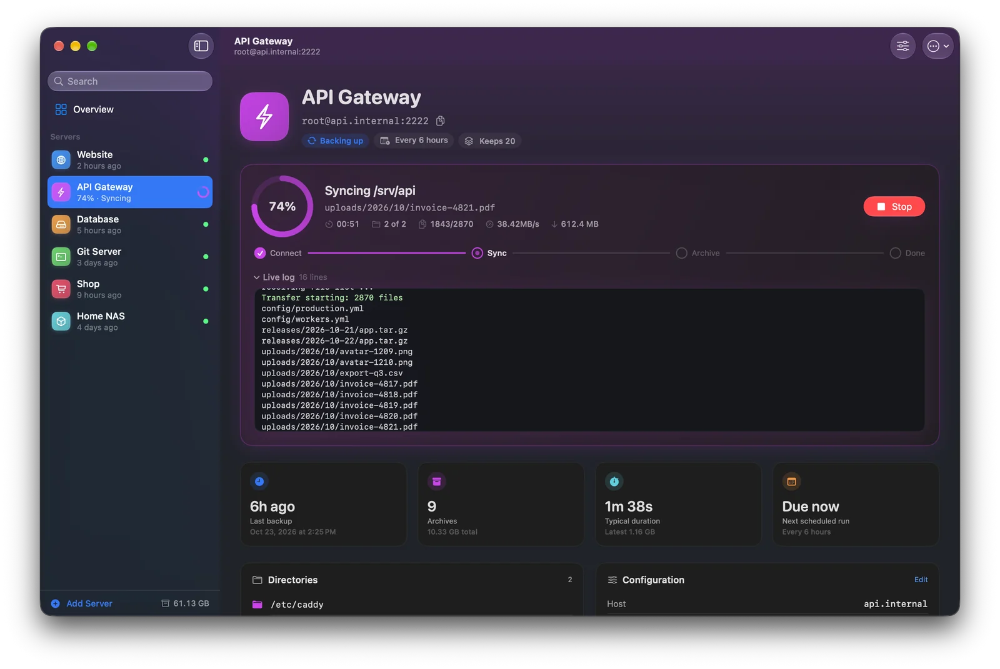
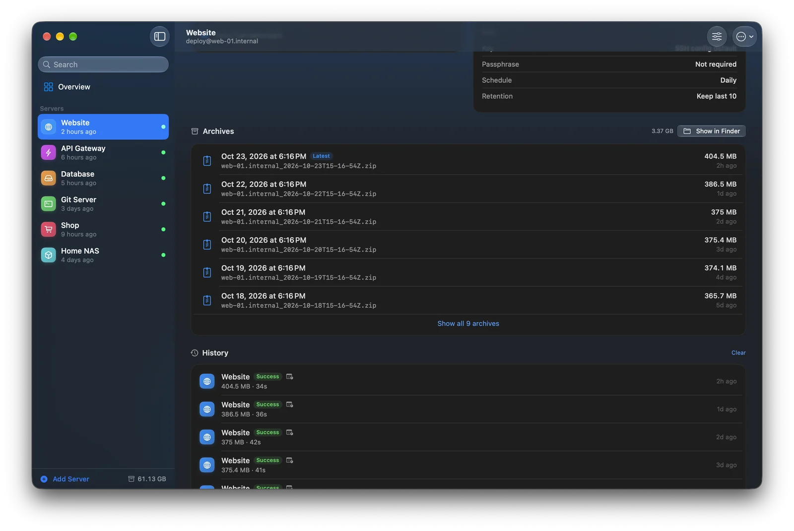
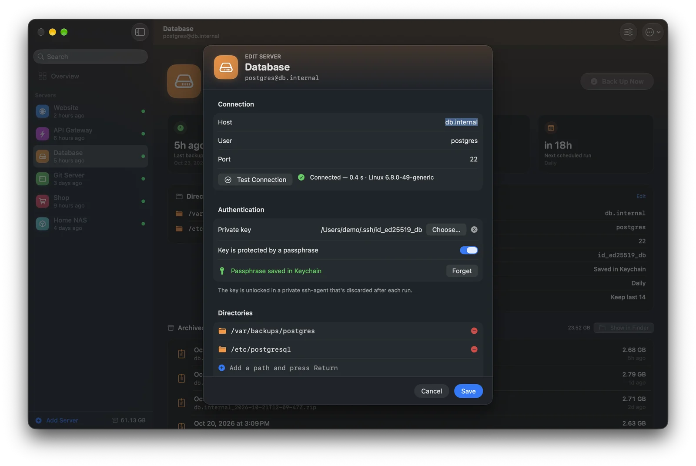
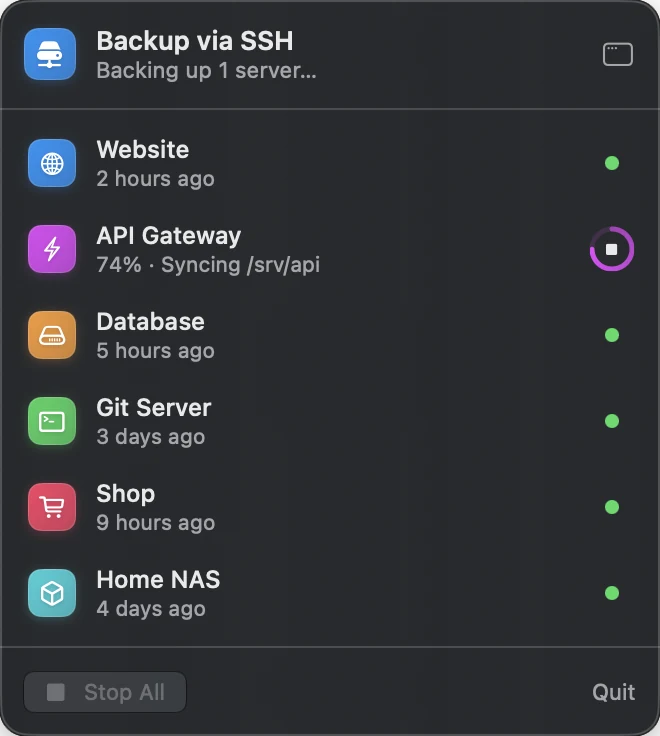
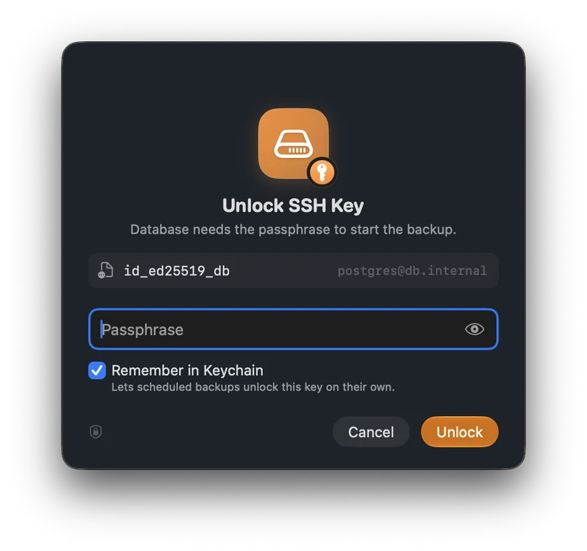
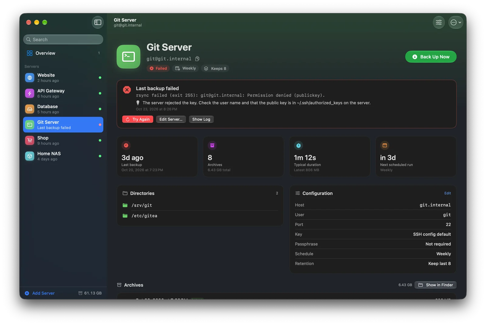

Watch every file arrive.
Every backup shows exactly where it is — connecting, syncing, archiving — with the file being copied, how many are left, the transfer speed and the real rsync log.
- Several servers back up in parallel
- Stop any backup with one click

Every backup, neatly dated.
Each run becomes one timestamped ZIP in the folder you choose. Browse a server's archives, reveal them in Finder, and see the full history with duration and size.
- Keep only the last N archives — older ones go to the Trash
- Nothing leaves your Mac

Set up in a minute.
Enter a host — or just an alias from your SSH config — pick the folders, and test the connection before the first backup. Keys, ports and options from ~/.ssh/config just work.
- One-click suggestions for common folders
- Give each server a name, color and icon

Set it and forget it.
Schedule backups every 6 hours, daily or weekly. Close the window and the app keeps watch from the menu bar — and lets you know when a backup finishes or fails.
- Status of every server in the menu bar
- Back up all servers from anywhere

Your keys stay yours.
Passphrase-protected keys are unlocked in a private ssh-agent that's discarded after each run. Want unattended backups? Remember the passphrase in your Keychain — or don't.
- Runs in the macOS App Sandbox
- No accounts, no cloud, no tracking

Answers, not cryptic errors.
When something goes wrong, you get the error in plain language and how to fix it — a rejected key, an unknown host, a wrong port — plus the log if you want to dig deeper.
- Try again with one click
- Open an SSH session in Terminal right from the app

Made for the Mac.
Small details that make backups feel effortless.
Native and fast
Built with SwiftUI, with Liquid Glass on macOS 26 and full light and dark mode support.
Speaks SSH
Uses your SSH config, keys and known hosts — the same setup you use in Terminal.
Back up everything
One click backs up every server at once, in parallel.
Keyboard friendly
Shortcuts for adding, backing up, editing and stopping — no mouse required.
Import & export
Move your server list to another Mac in seconds. Secrets are never exported.
Undo
Deleted a server by accident? Bring it back with one click.
Your servers, safely on your Mac.
No accounts. No cloud. Just your files, backed up.